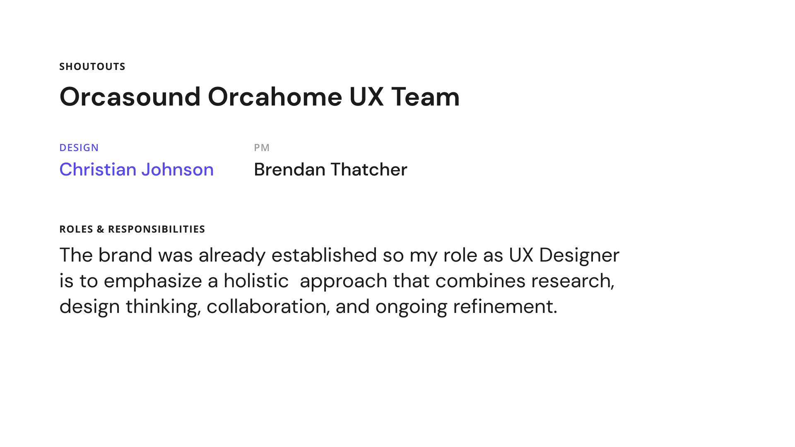
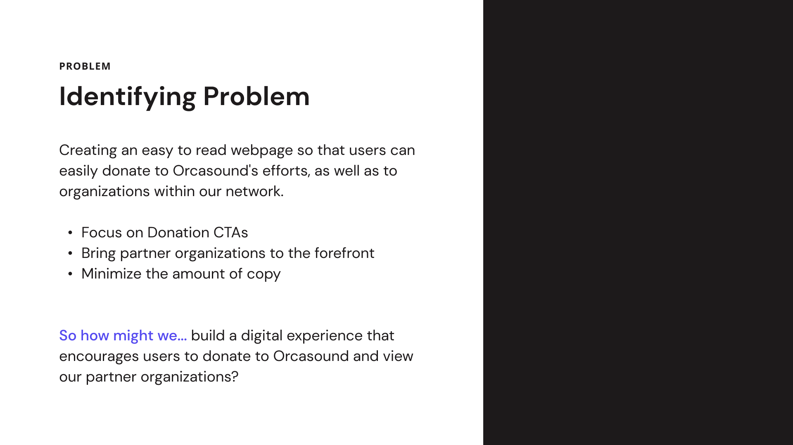
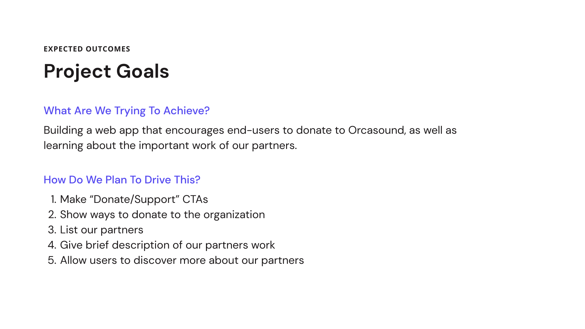
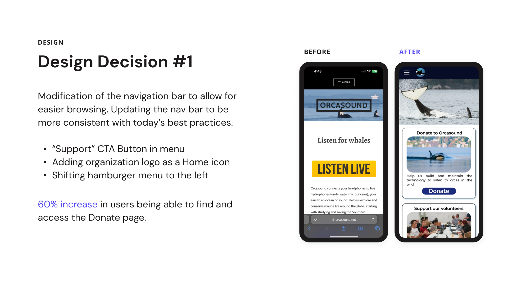
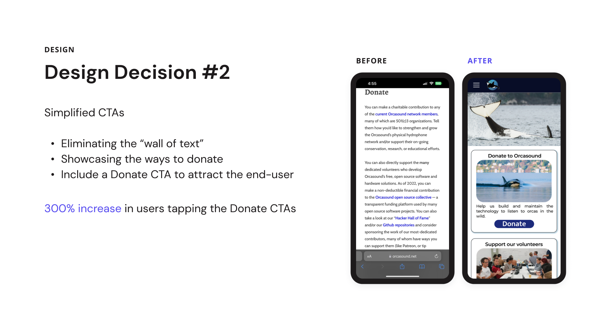

DEC 2024
Orcasound
Orcasound is a citizen science project that uses underwater microphones to listen for whales. I worked on the donation page, which is a critical part of the project. The donation page is a single page application that allows users to donate to the project. The page is designed to be simple and easy to use, with a focus on accessibility and user experience.
Responsibilities
- Designed the donation page
- Developed the donation page
- Tested the donation page




